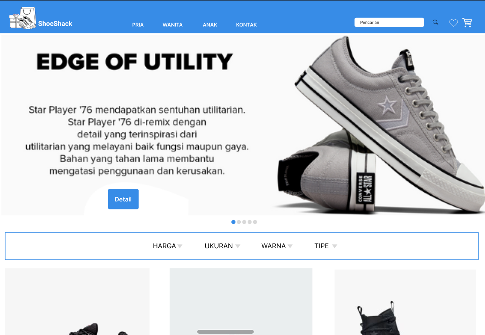
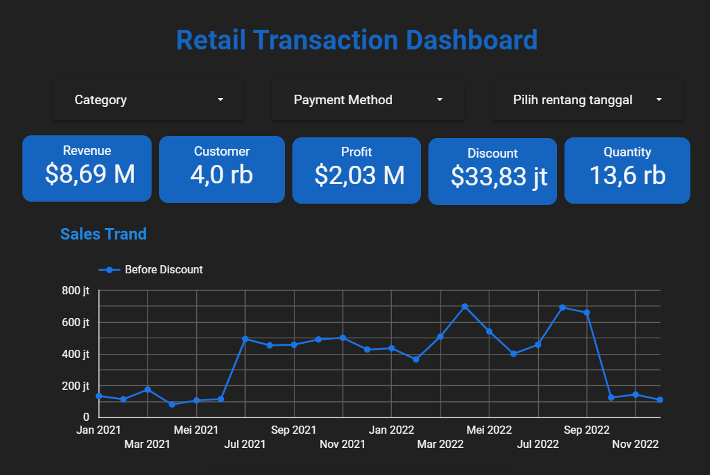
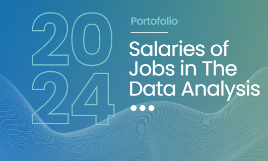

Featured Projects
A selection of data analysis and dashboard projects focused on delivering
actionable insights through visualization and structured data processing.

Retail Sales Performance and Transaction Analysis Dashboard
Developed an interactive dashboard to analyze retail transaction performance
based on revenue, profit, discounts, quantity sold, and customer metrics.
The dashboard visualizes sales trends, payment method distribution, and
transaction value by payment type to uncover purchasing behavior patterns
and evaluate the impact of discounts on profitability.
The analysis supports data-driven strategies to optimize sales performance
and improve overall business profitability.
Google Looker Studio
Retail Analytics
Business Intelligence
Data Visualization
View Dashboard
EduSmart – AI Powered Learning Mobile Application
EduSmart is a mobile-based learning platform designed to deliver
interactive and personalized educational experiences. The application
provides multiple learning categories such as Mathematics, English,
Computer Science, digital libraries, educational videos, and real-time
news updates.
Equipped with an AI-powered chat assistant and smart search functionality,
EduSmart enhances accessibility, engagement, and learning efficiency
through technology-driven education solutions.
Figma
UI/UX Design
AI Integration Concept
Mobile App Prototype
View Prototype

Credit Card Customer Default Prediction & Risk Mitigation Analysis
This project focuses on analyzing credit card payment delays that may
negatively impact business performance. Using historical customer and
transaction data, a predictive model was developed to identify customers
likely to default on their payments.
The model is designed to detect at least 60% of potential defaulters,
achieving accuracy and recall rates above 60%. Based on the findings,
strategic recommendations were proposed to reduce financial losses and
strengthen credit risk management processes.
Python
Machine Learning
Logistic Regression
Credit Risk Analysis
Data Modeling
View Project
Digital User Churn & Sales Dashboard
This dashboard analyzes user churn and sales performance across product
categories and cities to identify low-performing areas and growth
opportunities. It provides strategic insights to optimize pricing,
promotions, product quality, and targeted marketing, helping businesses
reduce churn and increase revenue sustainably.
Power BI
Google Looker Studio
Data Analysis
Business Intelligence
View Project
